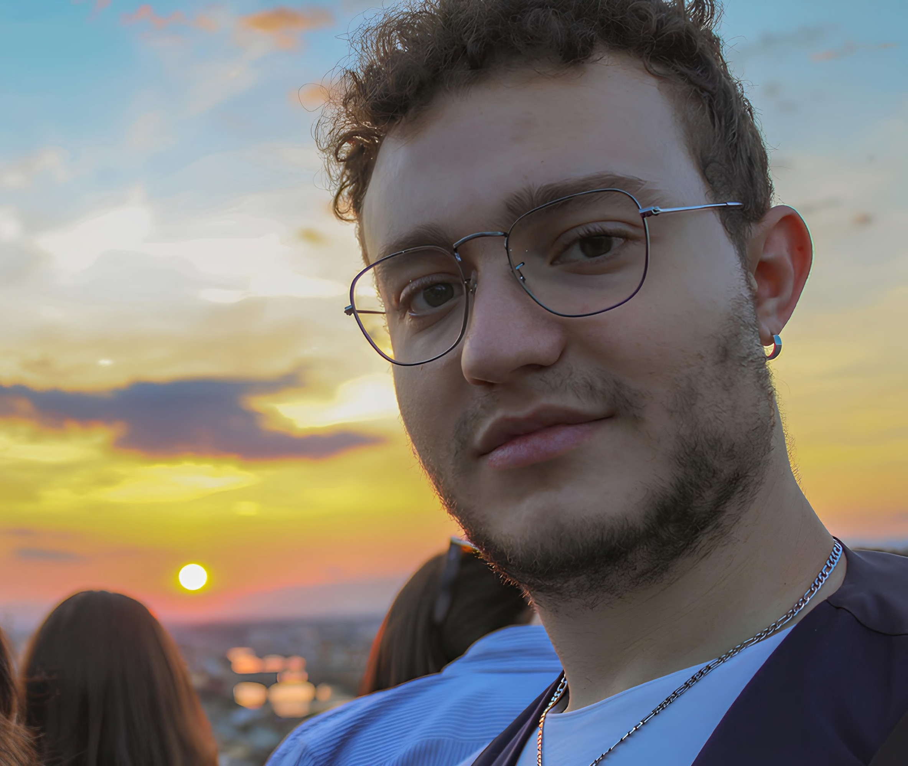

About me
Who I am, what I study and what I do when I'm not designing.

Bio
I’m Leonardo Macchiarini, a product designer based in Florence, Italy. I design physical products end to end: framing the problem, researching the user, modelling in CAD, then prototyping until the idea survives contact with reality.
I studied Industrial Design at the Università degli Studi di Firenze (110/110 cum laude), where my final thesis was a self-damping, energy-harvesting bicycle wheel. I’m now completing an M.Sc. in Design for Sustainable Innovation at the same university.
Outside the studio I lead children’s activities and summer camps in Florence. I started in 2014 and stayed for eleven years. It taught me more about groups, patience and planning than any course did.
Education
- 2024–M.Sc. Design for Sustainable Innovation, Università di Firenze
- 2021–24B.Sc. Industrial Design, 110/110 cum laude, Università di Firenze, thesis “Shock: self-damping and energy harvesting bike wheel”
- 2026Erasmus+ BIP, Brussels
- 2019/201 year Electronic Engineering
Skills
- Fusion 360
- 3D printing
- Rhino
- AutoCAD
- Technical drawing
- Blender
- AI tools
- MATLAB & code
- Adobe & Office
Languages
- Italian (native)
- English B2 (Cambridge)
- French
- Spanish